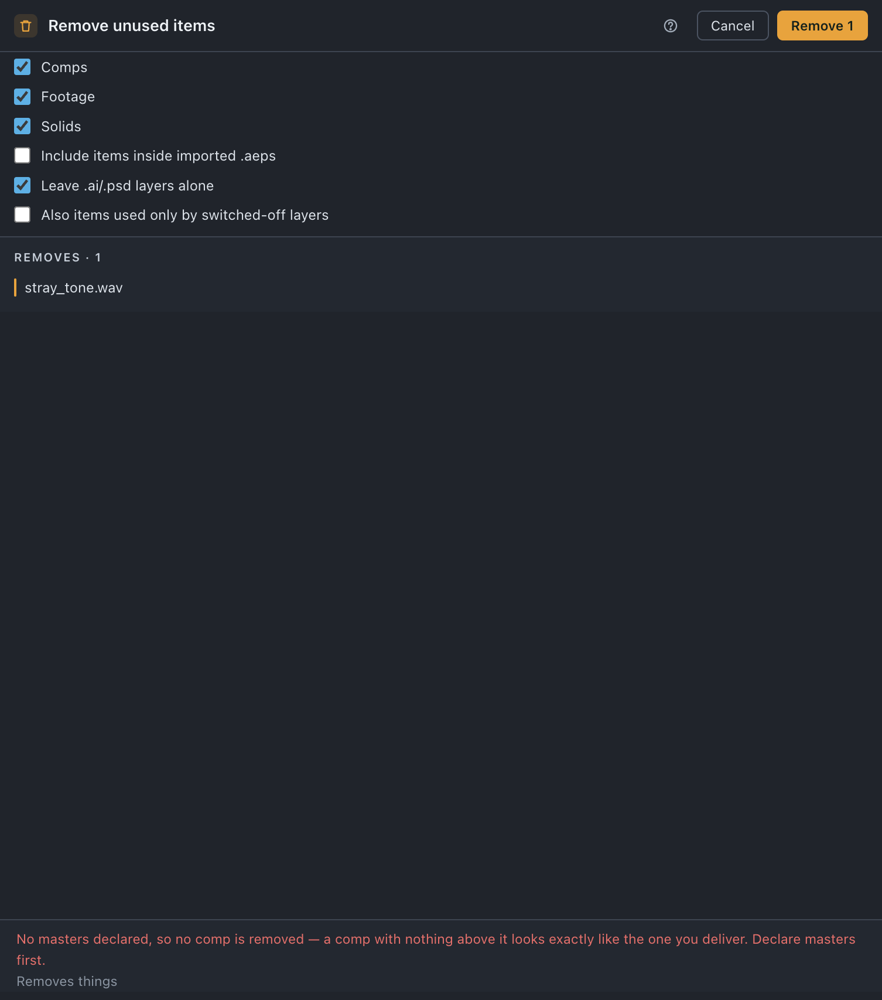

Unused
Deletes the comps, footage and solids that nothing in the project references — expressions counted as references, and comps only once you have said which comps matter.
Use it when
- The project has collected footage from three rounds of revisions and you want back only what is still in use.
- You are about to archive a job and would rather not archive the things nothing points at.
- You imported a pile of stills, used four of them, and the rest are sitting in
raster. - A comp tree you abandoned is still in the project and you want it gone rather than filed.
What it does
Asks, of every item, whether anything at all references it — a layer, a proxy, an Essential Graphics control, or an expression naming it by comp("X") or footage("X") — and deletes the ones where the answer is nothing. Footage and solids are judged that way whatever else is set up; comps are only judged once you have declared masters, because until then a comp with nothing above it looks exactly like the one you deliver. The run is one ⌘Z.
What it does not do: it does not set anything aside first — there is no quarantine folder, removals delete — it does not touch files on disk, and it does not judge a comp on whether you still want it, only on whether anything points at it.
Do it
- Press Unused. The first press reads the expression corpus, so the tile says reading… for a moment.
- Read the notes at the top of the sheet. A note in warning colour is a refusal, and it says which part of the run is not happening.
- Read the Removes list — every item by name, with the folder it sits in. The folder is the point: three items can share one filename.
- Press Remove n.
Scope. The whole project. Unused takes no selection.

What you'll see
| Option | What it means |
|---|---|
| Comps | On. Only acts once masters are declared; without them the run says so and removes no comp. |
| Footage | On. Footage nothing references, master or no master. |
| Solids | On. Same rule as footage. |
| Include items inside imported .aeps | Off by default. On, items that came in with an imported .aep are judged too. Off, that subtree is left alone — run Consolidate on it instead. |
| Leave .ai/.psd layers alone | On by default. One unused layer of a .psd the project uses is not unused art, so layer-set members are spared as a set. |
| Also items used only by switched-off layers | Off by default. A stronger claim than unused: these things are referenced, but only by layers that do not render. |
Notes it may raise, and what they mean:
- No masters declared, so no comp is removed — a comp with nothing above it looks exactly like the one you deliver. Declare masters first. — see Set up each project. Footage and solids still go.
- Cannot tell which items an expression names — the expressions phase has not been scanned, so nothing is removed. A comp only
comp("X")reaches looks exactly like an unused one. — nothing at all is proposed. It refuses rather than guessing, because an empty answer and an unread one look identical. - Cannot tell which layers are switched off — … — the extra tick could not be applied; the rest of the run is unaffected.
Undo
One ⌘Z, deletes included. Nothing on disk changes, and nothing is moved anywhere first.
Watch out
Things you might not think to do
- Strip a project down before archiving it. Masters declared, everything on, one press.
- Delete the footage only a switched-off layer uses. Tick Also items used only by switched-off layers. It is off by default because it acts on your project rather than on a copy.
- Clear the footage but keep every comp. Untick Comps.
- Leave an imported project untouched. Include items inside imported .aeps stays off, so the subtree is not judged until you have consolidated it.
Pairs with
Reduce when you want the opposite question answered — keep these, remove the rest. Consolidate first if an .aep was imported. Empty folders after, for the shells the deletes leave.